こんにちは、Power BI サポート チームの亀田です。
Azure Active Directoryでは、皆さまが普段利用されているユーザー アカウント (例: example@contoso.com) のほかに、サービス プリンシパルを利用することでもリソースにアクセスすることが可能です。Power BI では、レポートを他サービス/アプリケーションに埋め込む (Power BI Embedded) 場合や、REST API を実行する場合に利用されます。
本記事では、サービス プリンシパルについて説明し、例として PowerShell から REST API Get Activity Events を実行する方法や、Power Automate からこの REST API を実行する方法についてご案内いたします。
重要
本記事は弊社公式ドキュメントの公開情報を元に構成しておりますが、
本記事編集時点と実際の機能に相違がある場合がございます。
最新情報につきましては、参考情報として記載しておりますドキュメントをご確認ください。
目次
サービス プリンシパルとは
サービス プリンシパルは、テナントまたはディレクトリ内のアプリケーション インスタンスで、アプリがアクセスできるAzure AD テナント内のリソースやアプリにアクセスできるユーザー、アプリが実際に行えることの定義を持ちます。
サービス プリンシパルは、アプリケーションが使用される各テナントで作成され、グローバルに一意なアプリ オブジェクトが参照されます。 サービス プリンシパル オブジェクトには、特定のテナント内でアプリが実際に実行できること、アプリにアクセスできるユーザー、アプリからアクセスできるリソースを定義します。
普段皆さまが利用しているユーザー アカウント (例: example@contoso.com) は、人間が利用することを想定したアカウントとなります。そのため、スケジュールで実行することが想定されるようなスクリプトの場合には、ユーザー アカウントを利用することは推奨されず、サービス プリンシパルを利用することが推奨されます。
例えば、以下のような要件では、ユーザー アカウントではなくサービス プリンシパルを利用することで業務負荷を低減することが可能な場合があります。サービス プリンシパルでは、証明書またはシークレットを利用した認証を行いますが、例えば、シークレット キーの有効期限は最長2年となっているため、パスワードの有効期限ポリシーよりも有効期限が長い場合には、更新作業の頻度を抑えることが可能です。
- 業務での利用のため、スクリプトによってREST APIを実行し、アクティビティ ログを取得している。
- 資格情報にユーザー アカウントを利用している。
- ポリシー上、定期的なパスワードの更新が必須となっており、パスワード更新後には資格情報の更新作業が発生する。
サービス プリンシパルの作成
サービス プリンシパルはAzure Portal、PowerShell、Azure CLI、Microsoft Graph APIでの作成が可能です。また、Power BI Embdded用にサービス プリンシパルを作成する場合には、 Power BI 埋め込み分析セットアップ ツール での作成も可能です。本記事では、Azure Portalでの作成方法についてご案内いたします。その他の方法につきましては、以下の公開情報をご確認ください。
参考# ポータルで Azure AD アプリとサービス プリンシパルを作成する - Microsoft Entra | Microsoft Learn
参考# Azure アプリ ID を作成する (PowerShell) - Microsoft Entra | Microsoft Learn
参考# サービス プリンシパルの操作 - Azure CLI | Microsoft Learn
参考# serviceprincipal を作成する - Microsoft Graph v1.0 | Microsoft Learn
参考# Power BI Embedded を設定する - 環境の設定方法 | Microsoft Learn
手順1 アプリの登録
Azure Portal にアクセスします。
[Azure Active Directory] を選択します。
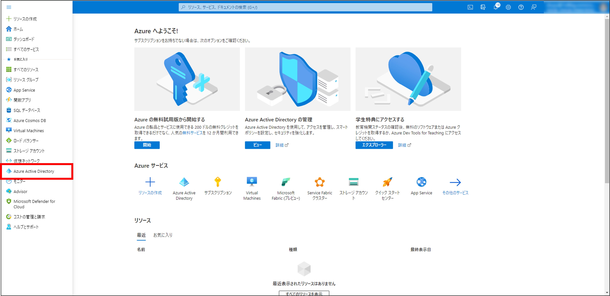[アプリの登録] を選択します。
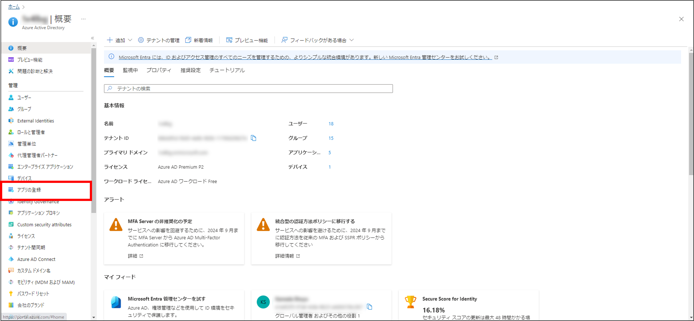[新規登録] を選択します。
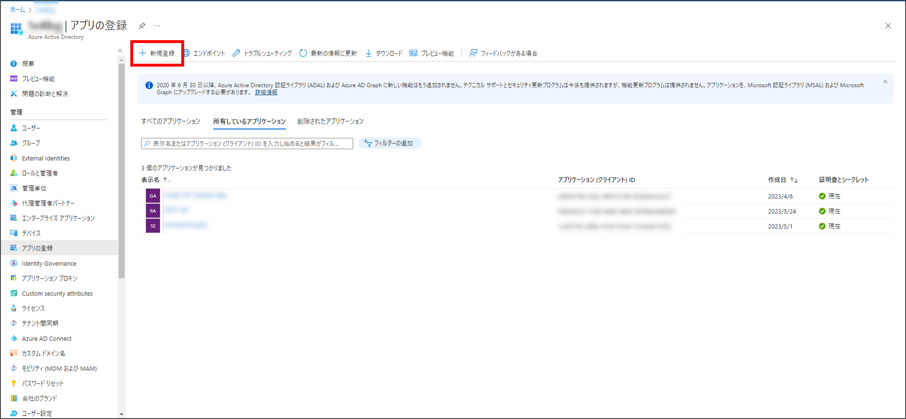名前を入力し、 [登録] を選択します。
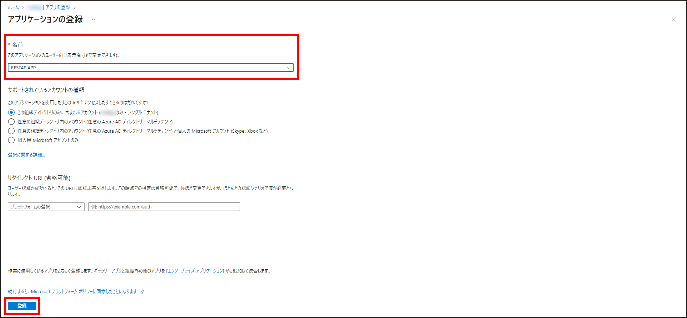
アプリの作成は以上で完了です。
手順2 証明書またはシークレットの作成
次に、認証に利用する証明書の登録またはシークレットの作成を行います。
証明書の登録を行う場合
[証明書とシークレット] を選択します。
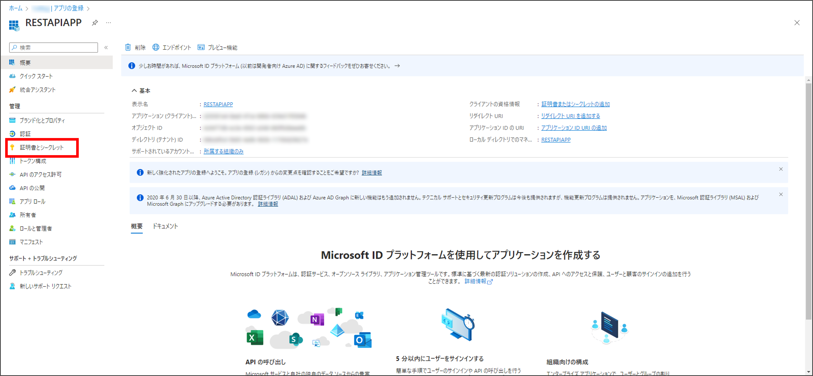[証明書] タブを開き、 [証明書のアップロード] を選択します。
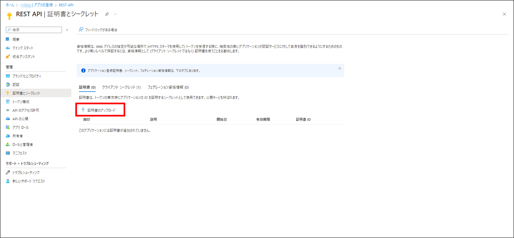証明書をアップロードし、 [追加] を選択します。
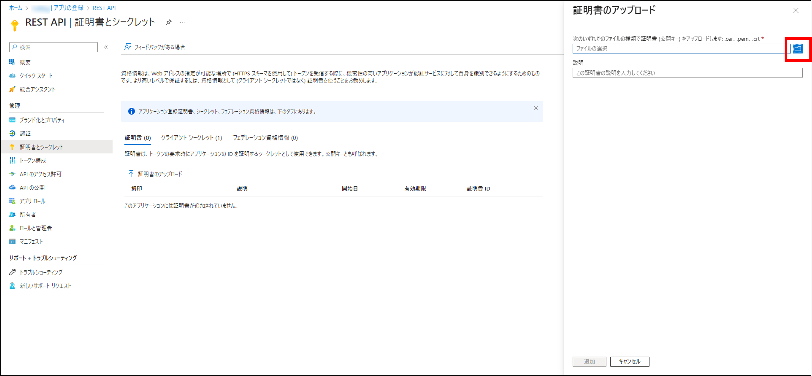証明書がアップロードされたことを確認します。
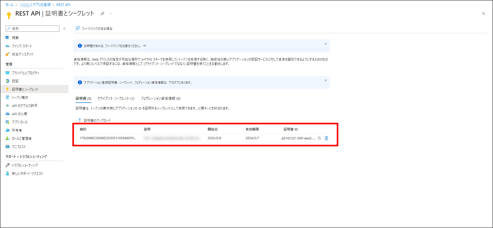
シークレットを作成する場合
[証明書とシークレット] を選択します。
[クライアント シークレット] タブを開き、 [新しいクライアント シークレット] を選択します。
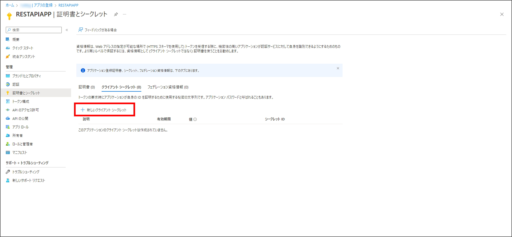説明、有効期限を設定し、 [追加] を選択します。
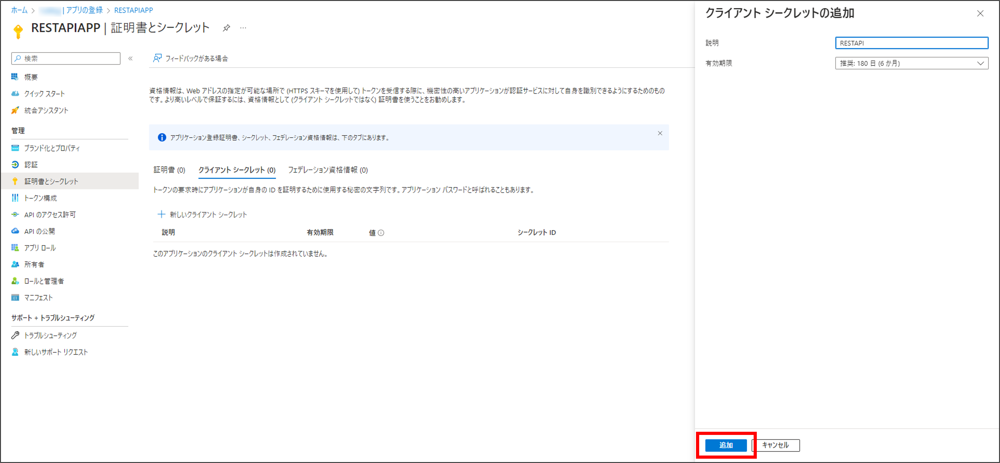シークレットが作成されたことを確認します。このとき、 必ず “値” を控えておきます。一度ウインドウを閉じてしまうと、一部が非表示となり再度表示することやコピーすることができなくなります。
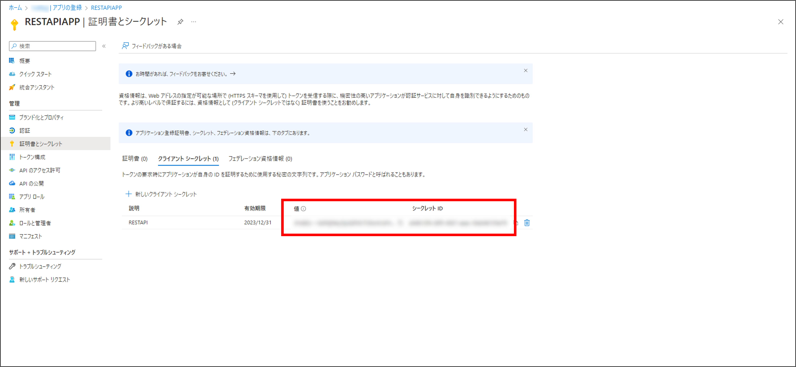
手順3 アクセス許可、スコープの設定
このあとは、実行したい内容に応じてアプリのアクセス許可やスコープを設定します。本手順では、後の REST API 実行のための権限設定を行います。
必要な権限の確認
実行したいAPIの公開情報を確認します。今回は Admin - Get Activity Events - REST API (Power BI Power BI REST APIs) | Microsoft Learn を実行します。
アクセス許可
- ユーザーは管理者権限 (Office 365グローバル管理者や Power BI サービス管理者など) を持っているか、サービス プリンシパルを使用して認証する必要があります。
- 委任されたアクセス許可がサポートされています。
サービス の prinicipal 認証で実行する場合、アプリには、Azure portalで Power BI に対して管理者の同意が必要な使用許可が設定されていないことが必要です。
必要なスコープ
Tenant.Read.All または Tenant.ReadWrite.All
標準の委任された管理者アクセス トークンを使用して認証する場合にのみ関連します。 サービス プリンシパルによる認証を使用する場合は、存在しない必要があります。
アクセス許可の設定
[API のアクセス許可] を選択します。
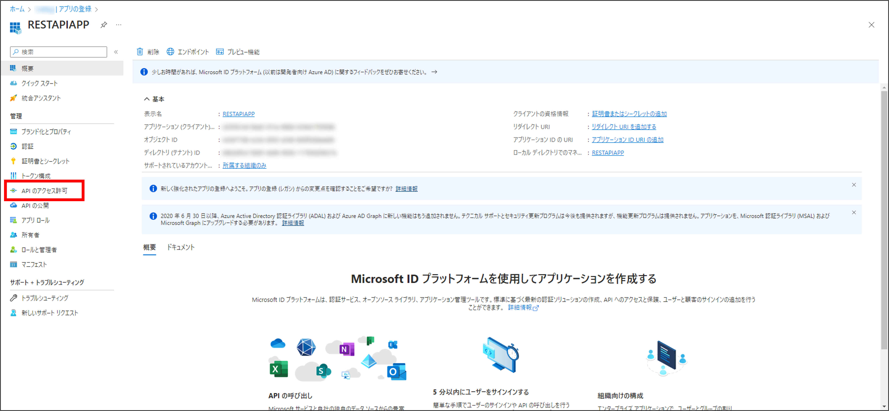今回利用するAPIではアクセス許可は不要なので、 [･･･] > [すべてのアクセス許可を削除] を選択します。
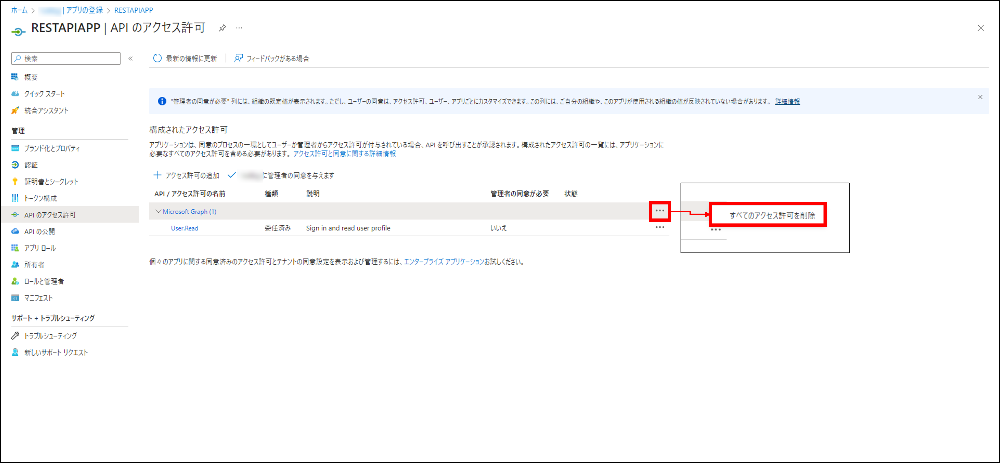確認が求められますが、 [はい、削除します] を選択します。
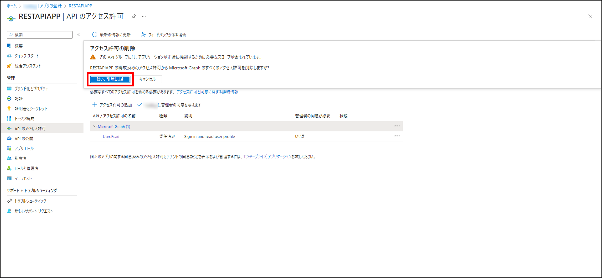アクセス許可が削除されたことを確認します。
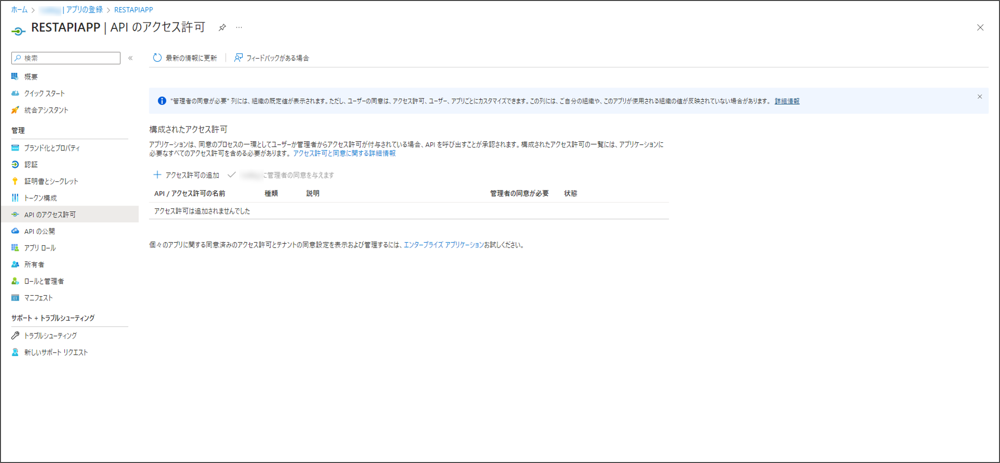
スコープの設定
[API の公開] を選択します。
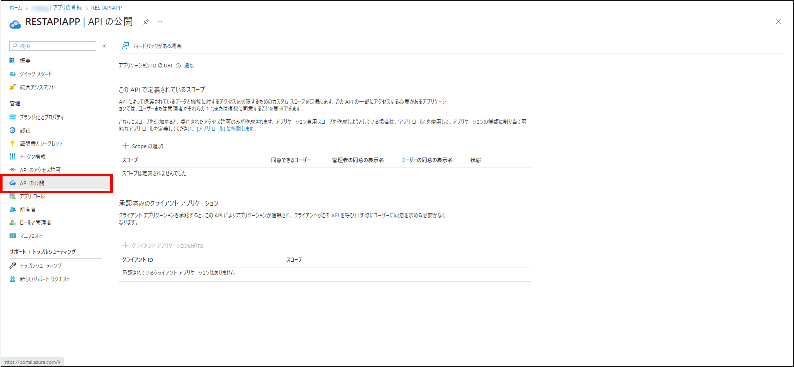今回利用するAPIでは、スコープは存在しない必要があるため、未定義であることを確認します。
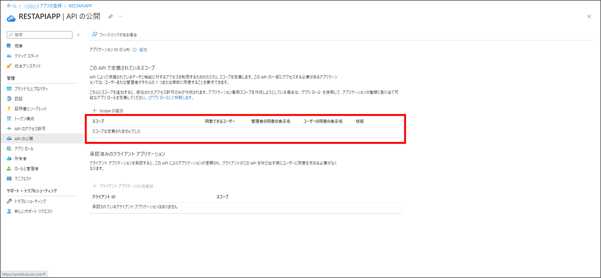
Power BI のテナント設定
Power BI でサービス プリンシパルを利用して REST API を実行するためには、テナント設定 [Power BI APIの使用をサービス プリンシパルに許可] 、 [読み取り専用管理APIの使用をサービス プリンシパルに許可する] を有効化する必要がございます。
Power BI APIの使用をサービス プリンシパルに許可
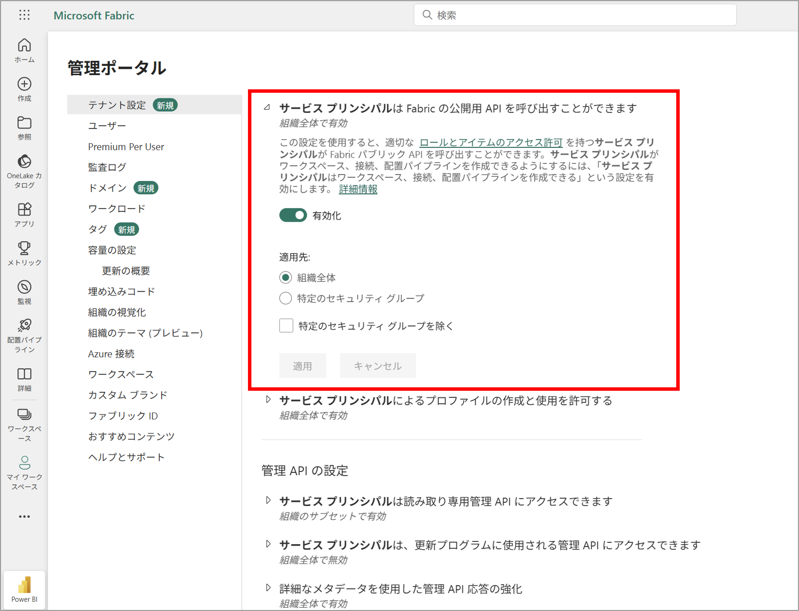読み取り専用管理APIの使用をサービス プリンシパルに許可する
こちらの設定は、セキュリティ グループ単位での有効化となります。そのため、Azure ADからセキュリティ グループを作成し、作成したサービス プリンシパルをグループに追加した上で、セキュリティ グループに対して設定を有効化します。詳細な手順については以下の公開情報をご確認ください。
参考# 読み取り専用の管理 API に対してサービス プリンシパル認証を有効にする - Power BI | Microsoft Learn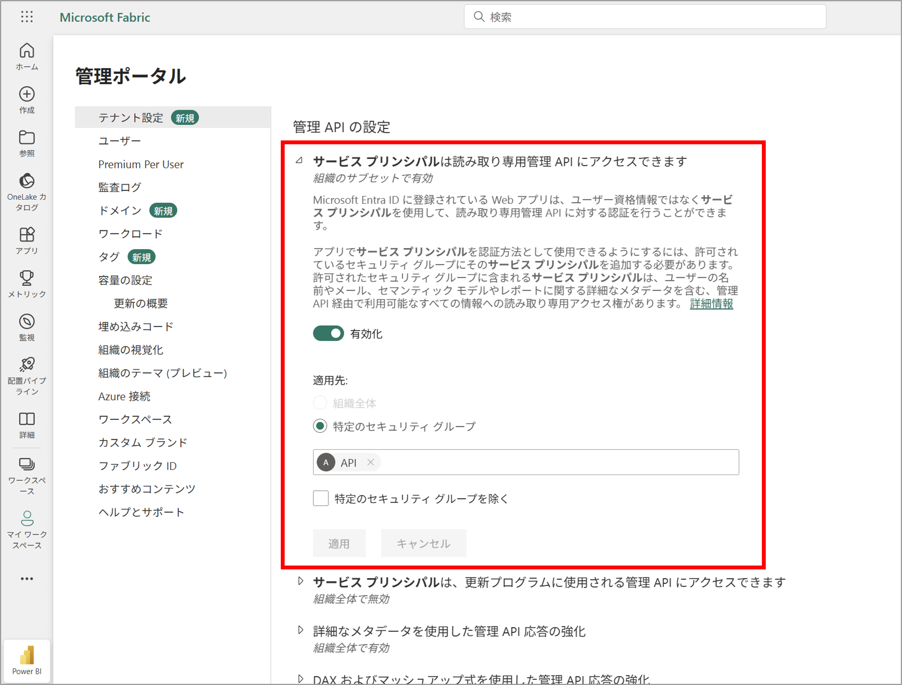
実際に動かしてみる
PowerShell および Power Automate から Get Activity Events を実行してみましょう。今回は例としてシークレットを利用した認証を行います。
事前準備
APIの実行にはアプリケーション (クライアント) ID、ディレクトリ (テナントID)、シークレット キー (値) が必要になるので、事前に確認しておきます。
PowerShell から API を実行する
PowerShell から API を実行してみましょう。サンプルコードは以下になります。アプリケーションID、シークレット キー、テナントIDはお手元の環境に合わせて入力します。
アクティビティ ログの取得は1日単位となるので、StartDateTime、EndDateTimeは同一日付とする必要があります。
参考# Power BI のユーザーアクティビティ追跡方法の比較 | Japan CSS Support Power BI Blog (jpbap-sqlbi.github.io)
Visual Studio Code やメモ帳などお好みのエディタから以下のコードを入力し、.ps1 ファイルとして保存します。検証のためユーザー名とパスワードを平文で含めていますが、セキュリティの観点からこのまま利用することは避け、実運用時には別ファイルから取得するなどの構成としてください。
1 | Import-Module -Name MicrosoftPowerBIMgmt |
上記サンプルコードを実行すると、C:\Temp 以下に activities.csv が生成されます。
Power Automate から API を実行する
Power Automate から REST API を実行することも可能です。実行にあたっては組み込みの HTTP コネクタ (プレミアム コネクタ) が必要となります。
以下の手順でフローを作成します。
[作成] > [インスタント クラウド フロー] を選択します。
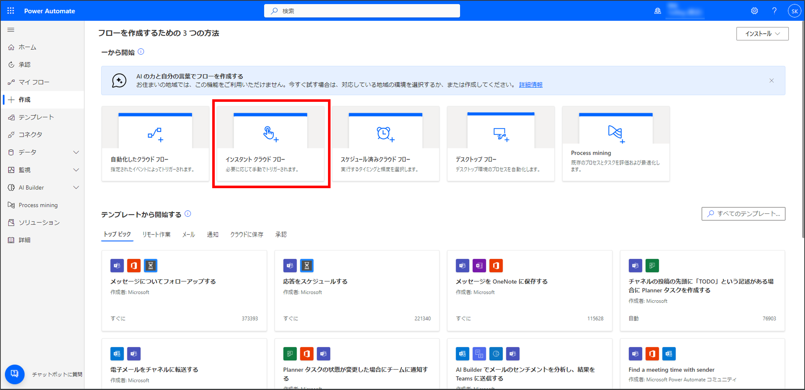[フローを手動でトリガーする] を選択します。
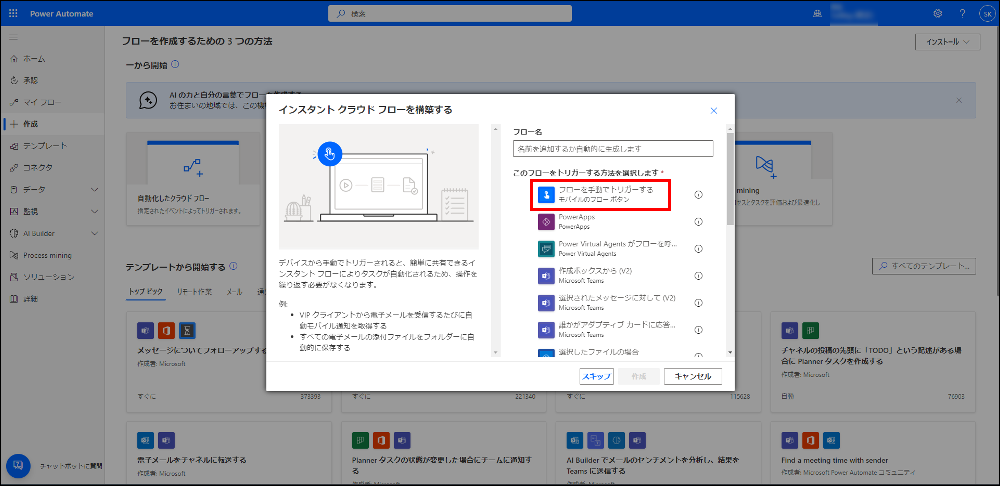操作で組み込みの HTTP コネクタを選択します。
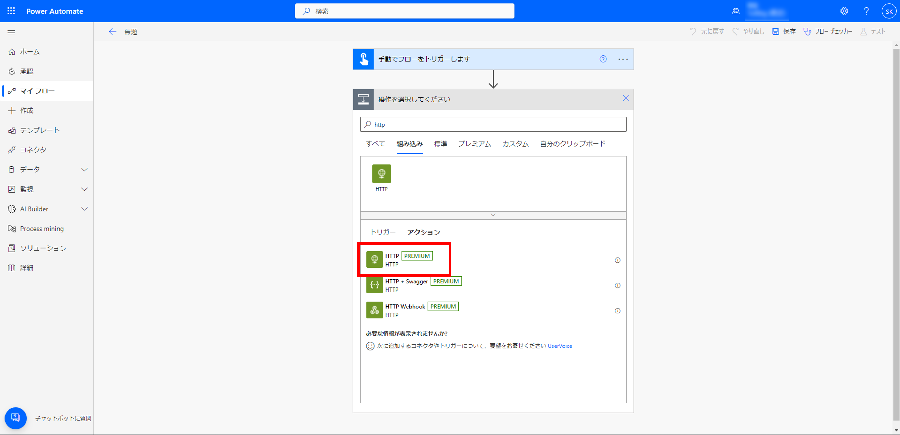以下のとおり設定します。
方法: GET
URI: https://api.powerbi.com/v1.0/myorg/admin/activityevents
クエリ:
- startDateTime: ‘2023-07-03T00:00:00.000Z’
- endDateTime: ‘2023-07-03T23:59:00.000Z’
認証: Active Directory OAuth
テナント: <テナントID>
クライアント ID: <クライアントID>
資格情報の種類: シークレット
シークレット: <シークレット キー>
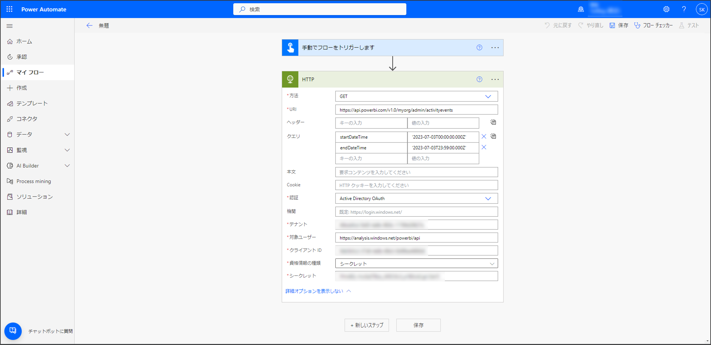設定できたら、 [保存] を選択して保存し、テストを実行します。アクティビティ ログが取得できていることを確認します。
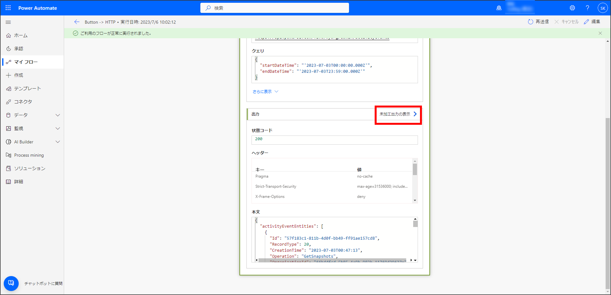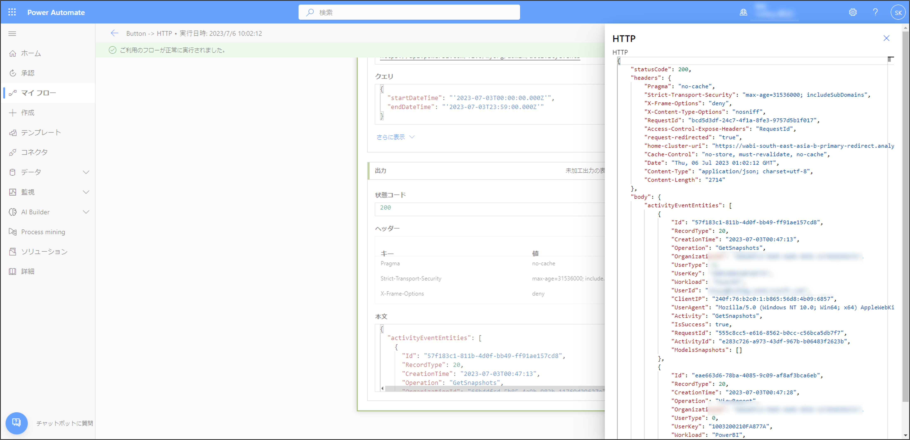
以上、本ブログが少しでも皆さまのお役に立てますと幸いでございます。
※本情報の内容（添付文書、リンク先などを含む）は、作成日時点でのものであり、予告なく変更される場合があります。